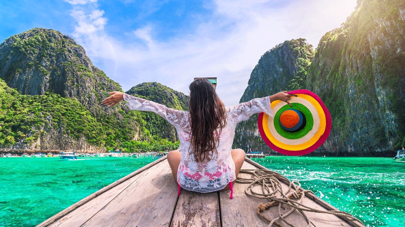
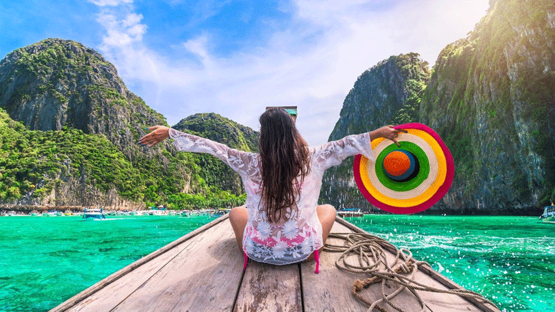
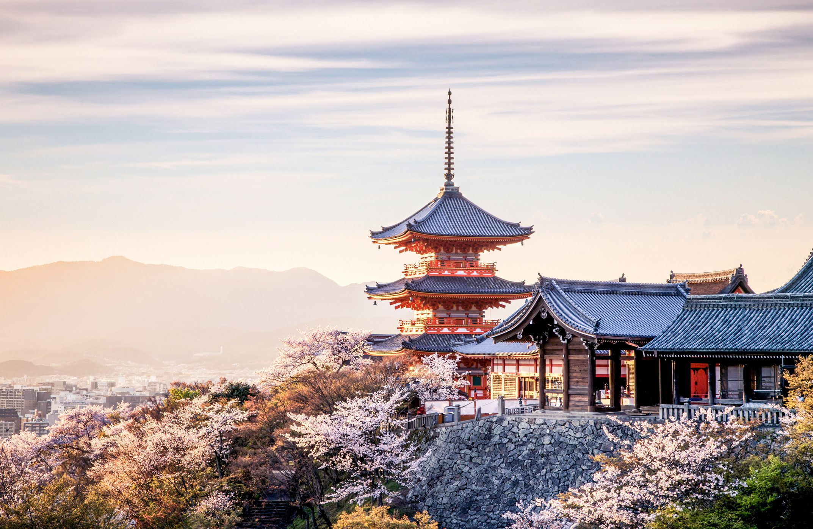
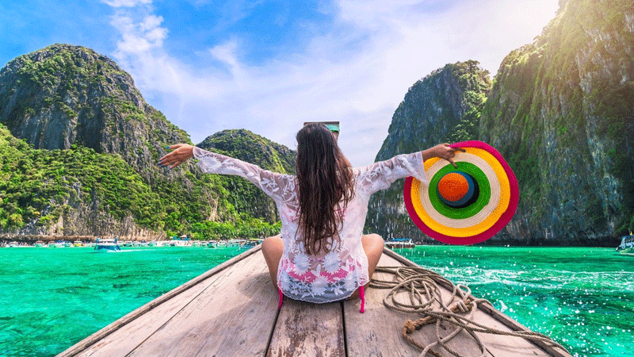
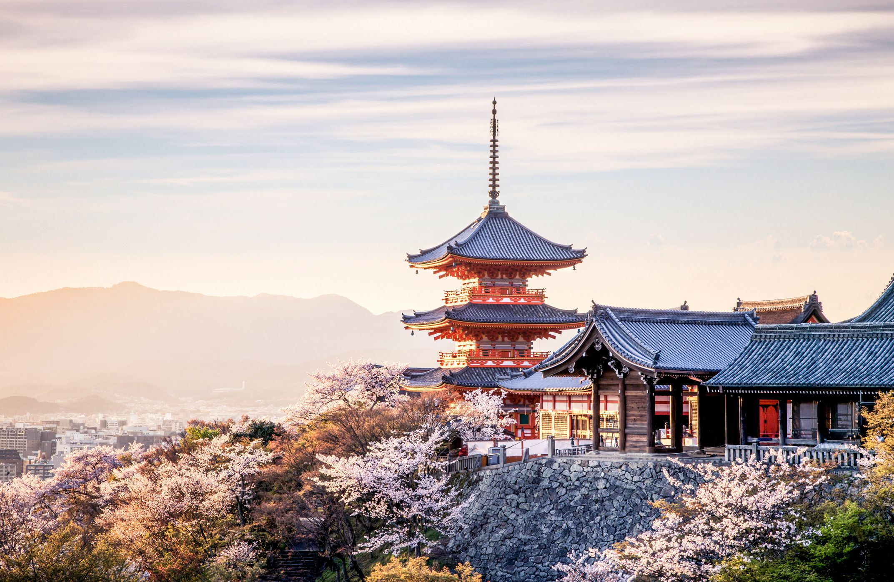
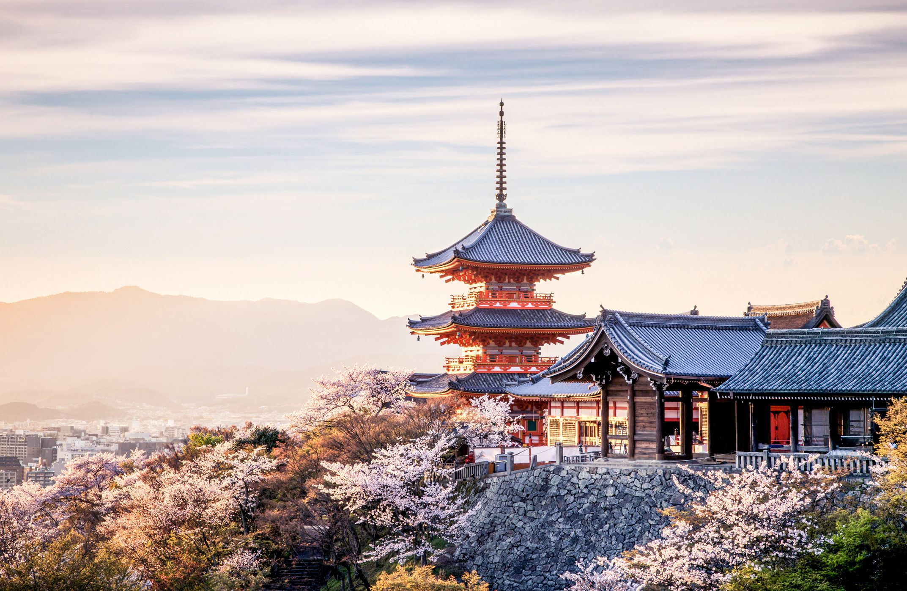
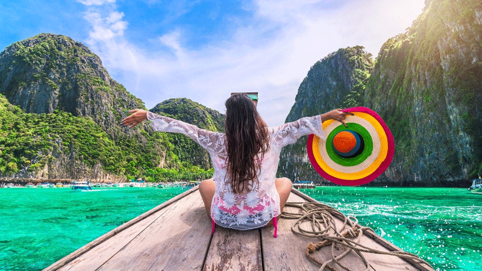
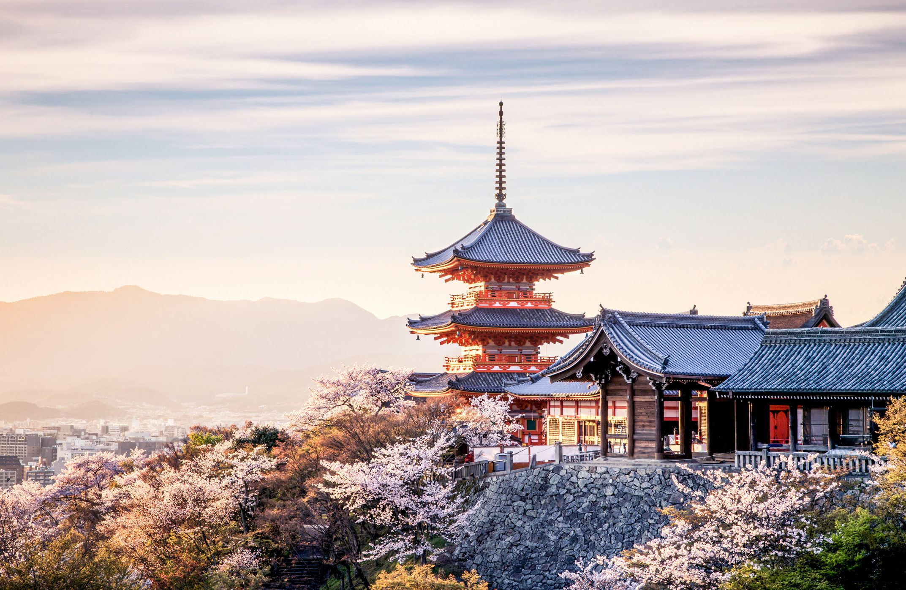

 





Its waters are the most amazing colour, a vivid shade of turquoise that changes in intensity through the summer as the glaciers melt. Set in the rugged Valley of the Ten Peaks, Moraine Lake is surrounded by mountains, waterfalls, and rock piles, creating a scene so stunning it almost seems unreal. Sit lakeside and absorb the sights and pure mountain air, or explore further by canoeing and hiking. It’s an iconically jaw-dropping place that is sure to leave a lasting impression (https://www.banfflakelouise.com/moraine-lake).
Lake Louise was most definitely a sight to see. We woke up at 5am, loaded the kids in the car, and drove and hour from our Airbnb in Canmore, AB to Lake Louise. It was quite cold this day in June, where were small snow flurries falling around us. My best friend Catalina, who lives in Calgary came along with us as a tour guide. It was so nice to spend time with her after our absence from one another for two years. We took this photo in front of Lake Louise mountains prior to continuing on our Alberta road trip.